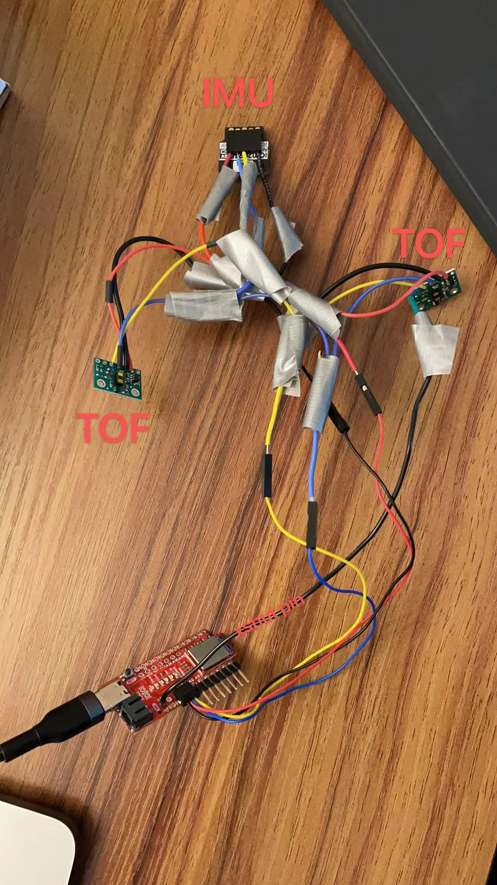
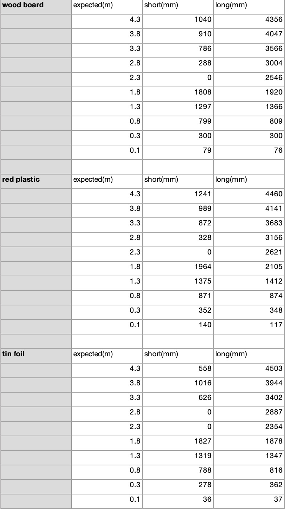
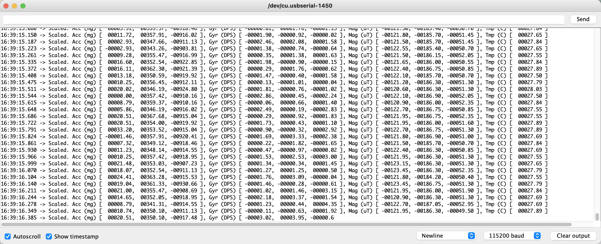
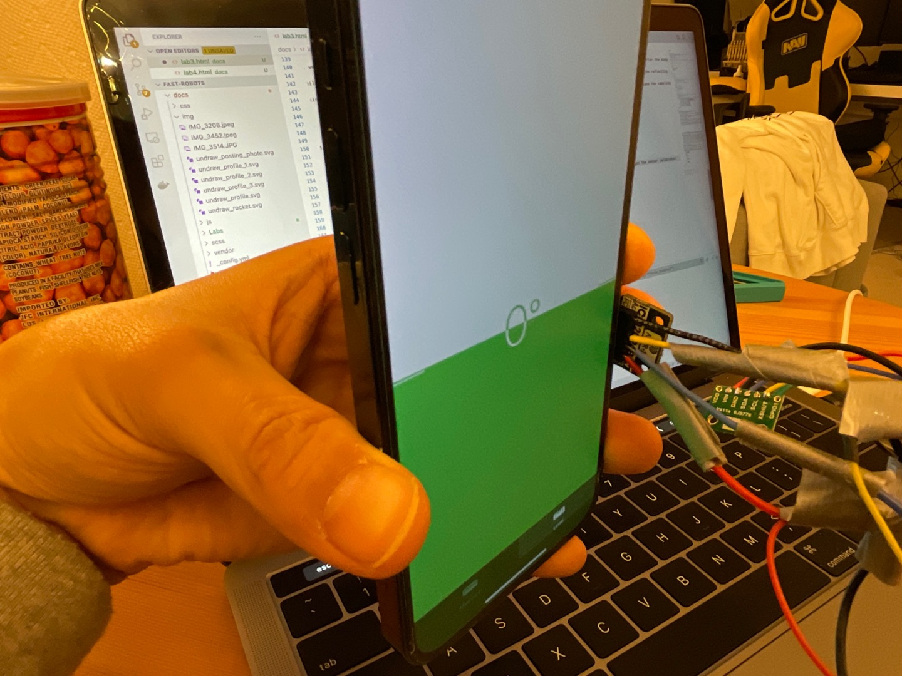
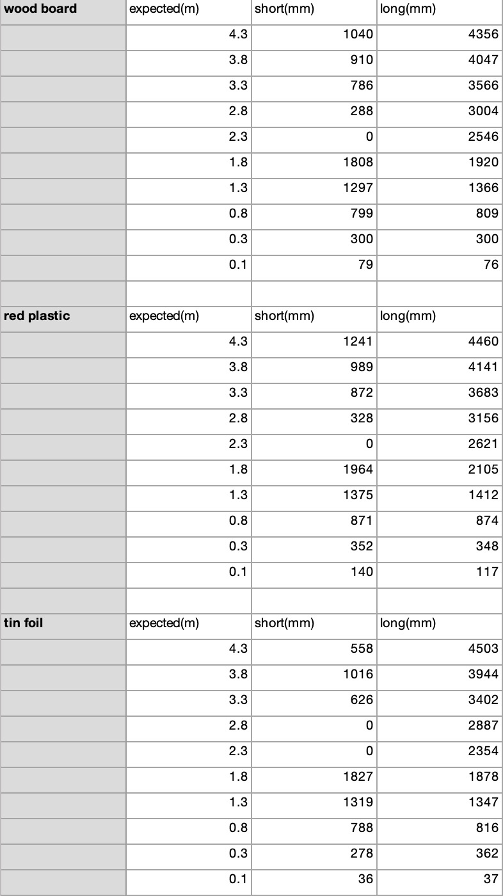
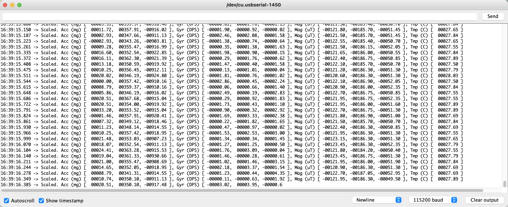
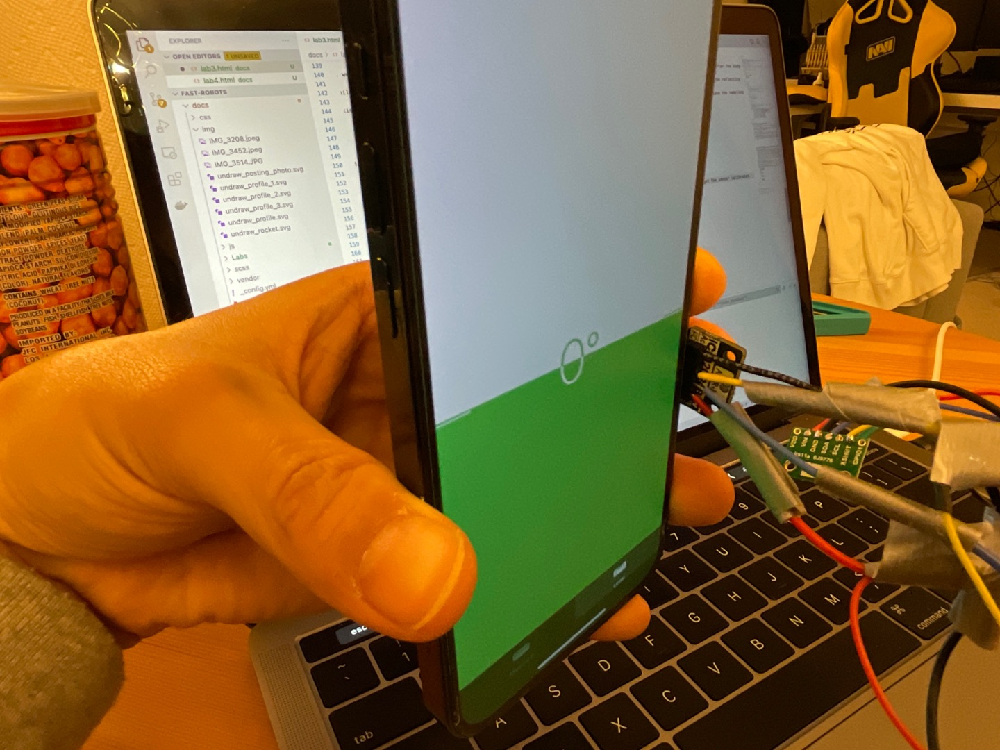
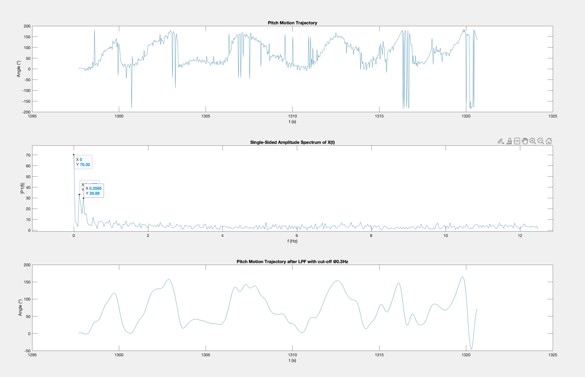
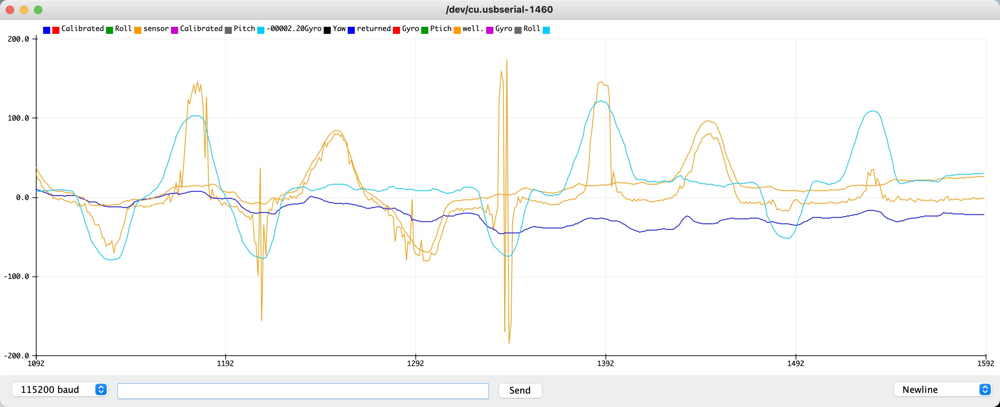

Lab 3 Report
In this lab, we soldered, connected two TOF sensors and one IMU sensor. All three sensors using the I2C Protocal.
Soldering
This part I have chosen a very poor design for my connection. I tried to solder four sets of three parallel connections to one point, and which caused a big hassel to add more points to the already soldered point. Which may need to be redone in the future for better implementation, but for now, it works for three sensors. Results shown in Fig.1.

Fig.1 Soldering Result
TOF
Part 1
While the board was wired with only one sensor, the address returned back is 0x29, which is a bit surprising that the sensor has a default value. Then for the same sensor, they both have the same address, which would be a problem for later on after connecting both TOF.
When connected to both TOF with the same address, the script would print out every address, 128 of them. It was out of the sctipt's intention to detect more than one address.
Part 2
For every range, the sensor uses a different wavelength of signal. The shorter the range, shorter the wavelength. And the sensor reads which point of the wavelength it recieved thus calculate out the distance it raveled.
For the final robot, I believe we would have an objective of mapping a room. So I think we would need to take into account of the stopping distance of the robot, though I doubt it would exceed 1m. And sampling interval of the robot, which would determine the accuracy of our mapping. I think the sampling rate would determine the upper limit of the range, and the stopping distance would determine the lower limit of the range. Which from my intuition, I think using the shortest range would be a good choice.
Part 3
For this part I set up a ruler on the floor extended to 4.4 meters. And tested the Long range and Short range on three different textures and colors. A wood cardboard, a red plastic, and a tin foil. Setup shown in Fig.2 to Fig.4. And measured results in Table.1.
 Fig.2 Cardboard setup
Fig.2 Cardboard setup
 Fig.3 Red plastic setup
Fig.3 Red plastic setup
 Fig.4 Tin foil setup
Table.1 Measured results

From the table you can see the short range start to become accurate around 1.8 meters. And long range is always some what close to expected distance, but with a slight constant shift, and only starts to become accurate also around 1.8 meters. And both sensors became inaccurate when lower than 0.3 meters. And you can see there are 0 meter readins in the 2.3 meters range for the short range, meaning the wavelength for the short range is around 2.3/2 = 1.15 meteres, where the signal traved two times the wave length.
And for diffent textures, you can see the better the reflection, the better the accuracy. But still not very large. Also for different colors, the accuracy didn't suffer very much.
Part 4
This part, because of the conflicting address from part 1. I connected a GPIO pin to xshut pin of one of the TOF sensor. I would initiate two sensors, and then pull the xshut high to shut off one of the TOF and set the address of the other to 0x2A. Now that two TOF would have 2 different address, the I2C would have no trouble communicating with both. Demonstration in below video.
Part 5960
1. There are Amplitude-Based IR Distance sensor. They transmit a certain infrared signal, and pick up the refelction of Photo diode. Thus they are sensitive to surface color, texture and ambient light. But they are cheacp with csimple circuitry. Works well for object detection, break beam sensors, classifying greyscale intensity at a fixed distance, and short-range distance measuring.
Then there's Triangulation-based IR Distance sensors. They read the angle between the transmitter position and the reflection signal. So they are less sensitive to the atibutes of the surface reflecting from. Works with medium range 0.05m - 1m.
Last is our TOF sensor. The signal it transmits out is a pulse modulated signal, and calculate the round trip travel time of the signal. Because the signal is pulse modulated, it is mostly insensitive to tesxture color, and ambient light.
2. We used part 3's example code Example3_StatusAndRate to test out timing budget and measure intervals. From the manual, we learned that timing budget is a time deadline set for the signal to recieve the signal, thus determines the our distance detecting range, the shorter the budget, less the range. But with it set to larger, we would get better reliability on our readings. And the timing inervals is for setting the sampling rate of the sensor. And with playing around with the code. We noticed three things. 1) The default sampling rate is 10 Hz. 2) Sampling period can't be longer than the timing budget, or it will use the default value of 10 Hz. 3) Timing budget can only be set to 15 20 33 50 100 and 500.
For the application of this cart robot, I think I would set the budget to around 100 ms for better measurement reliability. The sampling rate would depend on speed of the robot, both linear and angular. For a faster robot we would need faster rate so it can catch the reflecting signal properly. As we are in a Fast Robot class, I think I would set it to 20~50 Hz.
3. From part 2's reasoning, the robot might move too fast for the TOF sensor to catch the reflecting signal. I tried shaking the sensor and rotating the sensor rapidly, and can see the signal fail half of the time with a sampling frequency of 10 Hz. But while I increase the sampling frequency, failure perceneage start to decrease.
For future implementation of the robot, I would add in sigma value detection to see each data point's integrity.
IMU
Setup
AD0_VAL depends on the connection on the board. If it is connected then it should be 1, if it is cut, then it should be 0. Setup result can be seen in Fig.1. And example script result can be seen in Fig.5.

Fig.5 IMU Testing Result
The accelaration always have a value when in idle. And it is due to gravity in the direction of -Z axis. While the gyroscope wouldn't have a reading if it is in idle, because it detects the angular velocity of the sensor to determine orientation.
Accelerometer
1. Using the equations from class, implemented the code below to calculate pitch and roll from acceleration. I used my iphone for angle calibration, shown in #####Fig.. And got readings for Table.1. Used these measurements for a Two Point Calibration and got the sensor calibrated.

Fig.6 Accelerometer Calibration
Fig.4 Tin foil setup
Table.1 Measured results

From the table you can see the short range start to become accurate around 1.8 meters. And long range is always some what close to expected distance, but with a slight constant shift, and only starts to become accurate also around 1.8 meters. And both sensors became inaccurate when lower than 0.3 meters. And you can see there are 0 meter readins in the 2.3 meters range for the short range, meaning the wavelength for the short range is around 2.3/2 = 1.15 meteres, where the signal traved two times the wave length.
And for diffent textures, you can see the better the reflection, the better the accuracy. But still not very large. Also for different colors, the accuracy didn't suffer very much.
Part 4
This part, because of the conflicting address from part 1. I connected a GPIO pin to xshut pin of one of the TOF sensor. I would initiate two sensors, and then pull the xshut high to shut off one of the TOF and set the address of the other to 0x2A. Now that two TOF would have 2 different address, the I2C would have no trouble communicating with both. Demonstration in below video.
Part 5960
1. There are Amplitude-Based IR Distance sensor. They transmit a certain infrared signal, and pick up the refelction of Photo diode. Thus they are sensitive to surface color, texture and ambient light. But they are cheacp with csimple circuitry. Works well for object detection, break beam sensors, classifying greyscale intensity at a fixed distance, and short-range distance measuring.
Then there's Triangulation-based IR Distance sensors. They read the angle between the transmitter position and the reflection signal. So they are less sensitive to the atibutes of the surface reflecting from. Works with medium range 0.05m - 1m.
Last is our TOF sensor. The signal it transmits out is a pulse modulated signal, and calculate the round trip travel time of the signal. Because the signal is pulse modulated, it is mostly insensitive to tesxture color, and ambient light.
2. We used part 3's example code Example3_StatusAndRate to test out timing budget and measure intervals. From the manual, we learned that timing budget is a time deadline set for the signal to recieve the signal, thus determines the our distance detecting range, the shorter the budget, less the range. But with it set to larger, we would get better reliability on our readings. And the timing inervals is for setting the sampling rate of the sensor. And with playing around with the code. We noticed three things. 1) The default sampling rate is 10 Hz. 2) Sampling period can't be longer than the timing budget, or it will use the default value of 10 Hz. 3) Timing budget can only be set to 15 20 33 50 100 and 500.
For the application of this cart robot, I think I would set the budget to around 100 ms for better measurement reliability. The sampling rate would depend on speed of the robot, both linear and angular. For a faster robot we would need faster rate so it can catch the reflecting signal properly. As we are in a Fast Robot class, I think I would set it to 20~50 Hz.
3. From part 2's reasoning, the robot might move too fast for the TOF sensor to catch the reflecting signal. I tried shaking the sensor and rotating the sensor rapidly, and can see the signal fail half of the time with a sampling frequency of 10 Hz. But while I increase the sampling frequency, failure perceneage start to decrease.
For future implementation of the robot, I would add in sigma value detection to see each data point's integrity.
IMU
Setup
AD0_VAL depends on the connection on the board. If it is connected then it should be 1, if it is cut, then it should be 0. Setup result can be seen in Fig.1. And example script result can be seen in Fig.5.

Fig.5 IMU Testing Result
The accelaration always have a value when in idle. And it is due to gravity in the direction of -Z axis. While the gyroscope wouldn't have a reading if it is in idle, because it detects the angular velocity of the sensor to determine orientation.
Accelerometer
1. Using the equations from class, implemented the code below to calculate pitch and roll from acceleration. I used my iphone for angle calibration, shown in #####Fig.. And got readings for Table.1. Used these measurements for a Two Point Calibration and got the sensor calibrated.

Fig.6 Accelerometer Calibration
| Expected Angle | Actual Pitch | Actual Roll |
|---|---|---|
| 90° | -88.09° | 87.99 |
| 0° | -0.5° | -1.53° |
| -90° | 87.18° | -89.36° |
// Raw
SERIAL_PORT.print("Ptich: ");
printFormattedFloat(180*atan2(sensor->accX(),sensor->accZ())/M_PI, 5, 2);
SERIAL_PORT.print(", Roll: ");
printFormattedFloat(180*atan2(sensor->accY(),sensor->accZ())/M_PI, 5, 2);
// Two Point Calibration
SERIAL_PORT.print(", Calibrated Ptich: ");
printFormattedFloat(((180*atan2(sensor->accX(),sensor->accZ())/M_PI)-87.18)*180/(-88.09-87.18)-90, 5, 2);
SERIAL_PORT.print(", Calibrated Roll: ");
printFormattedFloat(((180*atan2(sensor->accY(),sensor->accZ())/M_PI)+89.36)*180/(88.09+89.36)-90, 5, 2);
SERIAL_PORT.println();
2. I recored a constant tap's data along with the time stamp into matlab while constantly rotating the sensor, used a fast Fourier Transform and got the motion frequency. Shown in Fig.7.

Fig.7 Pitch Motion Trajectory and Frequency Response
From above figure, you can see that the motion frequency is at around 0 Hz, 0.147 Hz and 0.259 Hz. All other are noise since the tapping from hand isn't very periodic. So just to filter out tapping, I would set the cut-off frequency at around 0.3~0.4 Hz, leaving some room for the LPF to decay. So that it would let the motion pass, and block the high frequency tapping so we can get rid of the noise. And from the 3rd subplot, you can see that the motion signla has become much smoother.
data = [[ __Data from arduino output__ ]];
t = data(:,1);
pitch = data(:,2);
roll = data(:,3);
pdata = pitch;
subplot(3,1,1);
plot(t,pdata)
title('Pitch Motion Trajectory')
xlabel('t (s)')
ylabel('Angle (°)')
T = 0.04;
Fs = 1/T;
L = max(size(t));
Y = fft(pdata);
P2 = abs(Y/L);
P1 = P2(1:L/2+1);
P1(2:end-1) = 2*P1(2:end-1);
f = Fs*(0:(L/2))/L;
subplot(3,1,2);
plot(f,P1)
title('Single-Sided Amplitude Spectrum of X(t)')
xlabel('f (Hz)')
ylabel('|P1(f)|')
subplot(3,1,3)
y = lowpass(pdata,0.3,Fs);
plot(t,y)
title('Pitch Motion Trajectory after LPF with cut-off @0.3Hz')
xlabel('t (s)')
ylabel('Angle (°)')
Gyroscope
1. Because the way gyroscope calculate angles by measuring the change in angular velocity, it is crucial to set the initial condition well so the gyroscope can track. I think gyroscope's values need to be reset from time to time, the angle it is tracking it's all based on motion. If the sensor gets a sudden movement, or the movement is too slow for it to be accurate, it can loose track of the angles. Thus I don't trust this sensor very much. Well the accelerometer data is constant at idle, the gyroscope readings keeps bounsing around. Although I didn't figure out how to use the myICM.setSampleRate(ICM_20948_Internal_Gyr, 1000) to change the sampling rate. I believe if the sampling rate get much higher, it would produce a better tracking. I adjust the loop delay time for a equivalent effect but lowering the sampling rate, I can see the gyroscope produce worce tracking of the angle. Results shown in Fig.8.

Fig.8 Gyroscope Result
From above figure, you can see while there is a shift between accelerometer readings and gyroscope's, gyroscope's has less noise. But while time goes on, the shift may be larger and larger.
2. Demonstration in video below.
Code:
pitch_t = (pitch_t + sensor->gyrY()*dt*0.001)*(1-alpha) + (((180*atan2(sensor->accY(),sensor->accZ())/M_PI)+89.36)*180/(88.09+89.36)-90)*alpha;
roll_t = (roll_t - sensor->gyrX()*dt*0.001)*(1-alpha) + (((180*atan2(sensor->accX(),sensor->accZ())/M_PI)-87.18)*180/(-88.09-87.18)-90)*alpha;
5960 Magnetometer to yaw angle
For this part, there's a lot of noise on the sensor, I couldn't get a good reading. But I can see the sensor does respond when moving around the Z axis, and while moving around not in perfect horizontal, the readings still has a trend. Demonstartion in below video.